pacman::p_load(olsrr, corrplot, httr, tidyverse, sf, tmap, jsonlite, progress, sfdep, GWmodel, Metrics, knitr, kableExtra, spatialRF, ggpubr, performance, car, rRColorBrewer, spdep, spatialreg)Take-home Exercise 3
Background
Objective
- In this hands-on exercise, we’ll be creating a geospatial explanatory model to predict HDB resale price from July to September 2024 using data from the whole year data (from July 2024 to June 2025). The focus of this take-home exercise analysis will be on four room HDB properties instead of all types fo HDB property.
The Data
In this hands, on we’ll be using the following datasets:
- HDB Resale Flat Prices (from Jan-2017 onwards) taken from data.gov.sg
- Supermarket location data taken from data.gov.sg
- Bus stop location data taken from LTA Datamall
- Preschool location data taken from data.gov.sg
- Kindergaten location data taken from data.gov.sg
- Hakwer centre location data taken from data.gov.sg
- Eldercare service location data taken from data.gov.sg
- Cleaned Master Plan 2019 Subzone (No Sea) dataset from Hands-on 2.
- MRT station location data taken from Kaggle. The original data is in xls format, but I tidied the data and changed the file format to csv as I could not open the xls file.
Import Libraries
Libraries used for this exercise are:
olsrr: build ordinary least squares regression model
httr: work with URL and HTTP
tidyverse: designed to amke it easy to isntall and load multiple tidyverse packages
sf: standardized way to encode and analyze spatial vector data
tmap: draw thematic map
jsonlite: json parser and generator
progress: configurable progress bar
sfdep: spatial depednence for sf
GWmodel: techniques form a particular branch of spatial statistical
SpatialModel: fit and summarize spatial model
Metrics: implement metric for regression, time series, binary classification and classification
ggpubr: provide easy to use function to customize ggplot2
performance: utilities for computing measures to assess model quality
car: provide function and tool for regression analysis
rRColorBrewer: manage colors
Geocode HDB
Resale Data First, we’ll import the HDB resale prices data using read_csv() and filter for 4 rooms HDB data from January to September 2025.
HDBresale <- read_csv("data/resale_price_from_jan2014.csv") %>%
filter(flat_type == "4 ROOM") %>%
filter(month >= "2025-01" & month <= "2025-09")Next, we’ll also rename street names that has “ST.” into “SAINT”
HDBresale$street_name <- gsub("ST\\.", "SAINT",
HDBresale$street_name)Next, we’ll be combining the block and street name column into addresses to be used for geocoding
geocode <- function(block, streetname) {
base_url <- "https://onemap.gov.sg/api/common/elastic/search"
address <- paste(block, streetname, sep = " ")
query <- list("searchVal" = address,
"returnGeom" = "Y",
"getAddrDetails" = "N",
"pageNum" = "1")
res <- GET(base_url, query = query)
restext <- content(res, as="text")
output <- fromJSON(restext) %>%
as.data.frame %>%
select(results.LATITUDE, results.LONGITUDE)
return(output)
}
Note
"searchVal" = address: pass the address as searchVal in the query"returnGeom" = "Y": send the query to OneMapSG search and return the geometryset
getAddreDetails = 'N'since don’t need all the address detailsfromJSON(restext):convert response from json format to textselect(results.LATITUDE, results.LATITUDE):retain latitude and longitude for output
HDBresale$LATITUDE <- 0
HDBresale$LONGITUDE <- 0
for (i in 1:nrow(HDBresale)){
temp_output <- geocode(HDBresale[i,4], HDBresale[i, 5])
HDBresale$LATITUDE[i] <- temp_output$results.LATITUDE
HDBresale$LONGITUDE[i] <- temp_output$results.LONGITUDE
}Proximity Analysis
In this section, we’ll count the number of geographic entities located within defined distance from each HDB properties.
Before performing proximity analysis, we need to make sure the input data need to be in sf object and they must be in the same projection coordinate system.
In our HDBresale variable, since it’s still in tbl dataframe, we’ll transform it into a sf object and adding in the coordinates and change the projected coordinate system.
HDBresale_sf <- HDBresale %>%
st_as_sf(coords = c("LONGITUDE", "LATITUDE"),
crs=4326) %>%
st_transform(crs=3414)Import CBD Data
Next, we’ll import all dataset used for the analysis. First, we’ll import the cleaned Master Plan 2019 Subzone (No Sea) dataset from Hands-on 2 exercise for to extract the CBD locations. We’ll import the data using read_rds.
map <- read_rds("data/mpsz_cl.rds")
st_crs(map)Coordinate Reference System:
User input: EPSG:3414
wkt:
PROJCRS["SVY21 / Singapore TM",
BASEGEOGCRS["SVY21",
DATUM["SVY21",
ELLIPSOID["WGS 84",6378137,298.257223563,
LENGTHUNIT["metre",1]]],
PRIMEM["Greenwich",0,
ANGLEUNIT["degree",0.0174532925199433]],
ID["EPSG",4757]],
CONVERSION["Singapore Transverse Mercator",
METHOD["Transverse Mercator",
ID["EPSG",9807]],
PARAMETER["Latitude of natural origin",1.36666666666667,
ANGLEUNIT["degree",0.0174532925199433],
ID["EPSG",8801]],
PARAMETER["Longitude of natural origin",103.833333333333,
ANGLEUNIT["degree",0.0174532925199433],
ID["EPSG",8802]],
PARAMETER["Scale factor at natural origin",1,
SCALEUNIT["unity",1],
ID["EPSG",8805]],
PARAMETER["False easting",28001.642,
LENGTHUNIT["metre",1],
ID["EPSG",8806]],
PARAMETER["False northing",38744.572,
LENGTHUNIT["metre",1],
ID["EPSG",8807]]],
CS[Cartesian,2],
AXIS["northing (N)",north,
ORDER[1],
LENGTHUNIT["metre",1]],
AXIS["easting (E)",east,
ORDER[2],
LENGTHUNIT["metre",1]],
USAGE[
SCOPE["Cadastre, engineering survey, topographic mapping."],
AREA["Singapore - onshore and offshore."],
BBOX[1.13,103.59,1.47,104.07]],
ID["EPSG",3414]]We’ll filter for records that’s in central region to get the CBD locations.
cbd_points <- map %>%
filter(REGION_N == "CENTRAL REGION")We’ll check if all of the points are valid using st_is_valid()
st_is_valid(cbd_points) [1] TRUE TRUE TRUE TRUE TRUE TRUE TRUE TRUE TRUE TRUE TRUE TRUE
[13] TRUE TRUE TRUE TRUE TRUE TRUE TRUE TRUE TRUE TRUE TRUE TRUE
[25] TRUE TRUE FALSE TRUE TRUE TRUE FALSE TRUE TRUE TRUE TRUE TRUE
[37] TRUE TRUE TRUE TRUE TRUE TRUE TRUE TRUE TRUE TRUE TRUE TRUE
[49] TRUE TRUE TRUE TRUE TRUE TRUE TRUE TRUE TRUE TRUE TRUE TRUE
[61] TRUE TRUE TRUE TRUE TRUE TRUE TRUE TRUE TRUE TRUE TRUE TRUE
[73] TRUE TRUE TRUE TRUE TRUE TRUE TRUE TRUE TRUE TRUE TRUE TRUE
[85] TRUE TRUE TRUE TRUE TRUE TRUE TRUE TRUE TRUE TRUE TRUE TRUE
[97] TRUE TRUE TRUE TRUE TRUE TRUE TRUE TRUE TRUE TRUE TRUE TRUE
[109] TRUE TRUE TRUE TRUE TRUE TRUE TRUE TRUE TRUE TRUE TRUE TRUE
[121] TRUE TRUE TRUE TRUE TRUE TRUE TRUE TRUE TRUE TRUE TRUE TRUE
[133] TRUE TRUENext, we’ll compute the distance between each HDB property to CBD and add a new column into the HDBresale_sf.
cbd_dist <- st_distance(HDBresale_sf, cbd_points)
HDBresale_sf$cbd_distance <- apply(cbd_dist, 1, min) %>% as.numeric()We’ll also check if all the distance are valid, all distance should not be less than 0.
sum(HDBresale_sf$cbd_distance < 0) [1] 0Import Hawker Center Data
Next, we’ll import the hawker center location data using st_read and transform the projection system coordinate into 3414.
hawker <- st_read("data/HawkerCentresKML.kml") %>%
st_transform(crs=3414)Reading layer `HAWKERCENTRE' from data source
`C:\stefanie-fel\ISSS626-GAA\Take-home_Ex\Take-home_Ex03\data\HawkerCentresKML.kml'
using driver `KML'
Simple feature collection with 125 features and 2 fields
Geometry type: POINT
Dimension: XYZ
Bounding box: xmin: 103.6974 ymin: 1.272716 xmax: 103.9882 ymax: 1.449017
z_range: zmin: 0 zmax: 0
Geodetic CRS: WGS 84Like the previous dataset, we’ll compute the distance from each HDB unit to nearest hawker centre using st_distance and add it as a column into the HDBresale_sf.
hawker_dist <- st_distance(HDBresale_sf, hawker)
HDBresale_sf <- HDBresale_sf %>%
mutate(nearest_hawker = apply(hawker_dist, 1, min))Import Eldercare Data
Like before, we’ll import the eldercare data using st_reada and transform the data to 3414 coordinate reference system.
eldercare <- st_read("data/EldercareServicesKML.kml") %>%
st_transform(crs=3414)Reading layer `ELDERCARE' from data source
`C:\stefanie-fel\ISSS626-GAA\Take-home_Ex\Take-home_Ex03\data\EldercareServicesKML.kml'
using driver `KML'
Simple feature collection with 133 features and 2 fields
Geometry type: POINT
Dimension: XYZ
Bounding box: xmin: 103.7119 ymin: 1.271472 xmax: 103.9561 ymax: 1.439561
z_range: zmin: 0 zmax: 0
Geodetic CRS: WGS 84Next, we’ll compute the distance of each HDB property to the nearest eldercare service and add the column into the HDBresale_sf.
eldercare_dist <- st_distance(HDBresale_sf, eldercare)
HDBresale_sf <- HDBresale_sf %>%
mutate(nearest_eldercare = apply(eldercare_dist, 1, min))Import Supermarket Data
Like before, we’ll import the supermarket location data using st_read and transform the data to 3414 coordinate reference system.
supermarket <- st_read("data/SupermarketsKML.kml") %>%
st_transform(crs=3414)Reading layer `SUPERMARKETS' from data source
`C:\stefanie-fel\ISSS626-GAA\Take-home_Ex\Take-home_Ex03\data\SupermarketsKML.kml'
using driver `KML'
Simple feature collection with 526 features and 2 fields
Geometry type: POINT
Dimension: XYZ
Bounding box: xmin: 103.6258 ymin: 1.24715 xmax: 104.0036 ymax: 1.461526
z_range: zmin: 0 zmax: 0
Geodetic CRS: WGS 84Next, we’ll compute the distance of each HDB property to the nearest supermarket and add the column into the HDBresale_sf.
supermarket_dist <- st_distance(HDBresale_sf, supermarket)
HDBresale_sf <- HDBresale_sf %>%
mutate(nearest_supermarket = apply(supermarket_dist, 1, min))Import Kindergaten Data
In this section, we’ll calculate how many kindergarten within 350 meters of each HDB property. We’ll import the data using st_read() and transform the crs to 3414.
kindergarten <- st_read("data/Kindergartens.kml") %>%
st_transform(crs=3414)Reading layer `KINDERGARTENS' from data source
`C:\stefanie-fel\ISSS626-GAA\Take-home_Ex\Take-home_Ex03\data\Kindergartens.kml'
using driver `KML'
Simple feature collection with 448 features and 2 fields
Geometry type: POINT
Dimension: XYZ
Bounding box: xmin: 103.6887 ymin: 1.247759 xmax: 103.9717 ymax: 1.455452
z_range: zmin: 0 zmax: 0
Geodetic CRS: WGS 84Next, we’ll calculate the number of kindergarten within 350 meters and add the results as a new column in HDBresale_sf.
kindergarten_within_350m <- st_is_within_distance(
HDBresale_sf, kindergarten, dist = 350)
HDBresale_sf <- HDBresale_sf %>%
mutate(kindergarten_350m = map_int(kindergarten_within_350m, length))Import Preschool Location Data
in this section, we’ll import the preschool dataset using st_read() and transform the projected coordinate system into 3414.
preschool <- st_read("data/PreSchoolsLocation(1).kml") %>%
st_transform(crs=3414)Reading layer `PRESCHOOLS_LOCATION' from data source
`C:\stefanie-fel\ISSS626-GAA\Take-home_Ex\Take-home_Ex03\data\PreSchoolsLocation(1).kml'
using driver `KML'
Simple feature collection with 2290 features and 2 fields
Geometry type: POINT
Dimension: XYZ
Bounding box: xmin: 103.6878 ymin: 1.247759 xmax: 103.9897 ymax: 1.462134
z_range: zmin: 0 zmax: 0
Geodetic CRS: WGS 84Next, we’ll count the number of preschool within 350 meter from each HDB property.
within_350m <- st_is_within_distance(
HDBresale_sf, preschool, dist = 350)
HDBresale_sf <- HDBresale_sf %>%
mutate(preschool_350m = map_int(within_350m, length))Import Bus Stop Location
Next, we want to calculate the number of bus stop within 350 meters of each HDB property.
bus_stop <- st_read(dsn = "data/LTADataMall/",
layer = "BusStop") %>%
st_transform(crs = 3414)Reading layer `BusStop' from data source
`C:\stefanie-fel\ISSS626-GAA\Take-home_Ex\Take-home_Ex03\data\LTADataMall'
using driver `ESRI Shapefile'
Simple feature collection with 5172 features and 2 fields
Geometry type: POINT
Dimension: XY
Bounding box: xmin: 3970.122 ymin: 26482.1 xmax: 48285.52 ymax: 52983.82
Projected CRS: SVY21bus_within_350m <- st_is_within_distance(
HDBresale_sf, bus_stop, dist = 350)
HDBresale_sf <- HDBresale_sf %>%
mutate(bus_350m = map_int(bus_within_350m, length))Import MRT Location
Next, we’ll calculate the distance of nearest MRT station from HDB property. We’ll first import the data using read_csv().
mrt <- read_csv("data/MRT Stations.csv")We’ll transform the tbl data frame into sf dataframe.
mrt_sf <- st_as_sf(mrt,
wkt = "geometry",
crs = 4326)Next, we’ll transform the sf dataframe from 4326 to 3414 coordinate reference system.
mrt_sf <- st_transform(mrt_sf, 3414)Next, we’ll compute for the distance between each HDB property to the nearest MRT station
mrt_dist <- st_distance(HDBresale_sf, mrt_sf)
HDBresale_sf <- HDBresale_sf %>%
mutate(nearest_mrt = apply(mrt_dist, 1, min))Data Preparation for Existing Variables
Next, we’ll also extract only the years as the remaining_lease variable instead of containing both the year and month.
HDBresale_sf$remaining_lease <- as.integer(substr(HDBresale_sf$remaining_lease, 1, 2))We’ll make turn storey_range column into nominal categorical variable instead of character variable.
HDBresale_sf$storey_range <- factor(HDBresale_sf$storey_range,
levels = c("01 TO 03", "04 TO 06", "07 TO 09", "10 TO 12",
"13 TO 15", "16 TO 18", "19 TO 21", "22 TO 24",
"25 TO 27", "28 TO 30", "31 TO 33", "34 TO 36",
"37 TO 39", "40 TO 42", "43 TO 45", "46 TO 48",
"49 TO 51"),
ordered = TRUE)
class(HDBresale_sf$storey_range)[1] "ordered" "factor" EDA
In this section, we’ll look at the trend of each variable used for analysis. First, we’ll check the resale_price variable.
ggplot(data=HDBresale_sf,
aes(x=`resale_price`)) +
geom_histogram(bins=20,
color="black",
fill="light blue")
As can be seen, a lot of HDB property are sold in lower price (between $400,000 and $800,000), it is rare that property owner sells their HDB property for more than $800,000.
PROX_ELDERLYCARE <- ggplot(data=HDBresale_sf,
aes(x= `nearest_eldercare`)) +
geom_histogram(bins=20,
color="black",
fill="light blue")
PROX_CBD <- ggplot(data=HDBresale_sf,
aes(x= `cbd_distance`)) +
geom_histogram(bins=20,
color="black",
fill="light blue")
PROX_HAWKER_MARKET <- ggplot(data=HDBresale_sf,
aes(x= `nearest_hawker`)) +
geom_histogram(bins=20,
color="black",
fill="light blue")
PROX_KINDERGARTEN <- ggplot(data=HDBresale_sf,
aes(x= `kindergarten_350m`)) +
geom_histogram(bins=20,
color="black",
fill="light blue")
PROX_PRESCHOOL <- ggplot(data=HDBresale_sf,
aes(x= `preschool_350m`)) +
geom_histogram(bins=20,
color="black",
fill="light blue")
PROX_SUPERMARKET <- ggplot(data=HDBresale_sf,
aes(x= `nearest_supermarket`)) +
geom_histogram(bins=20,
color="black",
fill="light blue")
PROX_REMAINING_LEASE <- ggplot(data=HDBresale_sf,
aes(x= `remaining_lease`)) +
geom_histogram(bins=20,
color="black",
fill="light blue")
PROX_BUS <- ggplot(data=HDBresale_sf,
aes(x= `bus_350m`)) +
geom_histogram(bins=20,
color="black",
fill="light blue")
ggarrange(PROX_ELDERLYCARE, PROX_CBD, PROX_HAWKER_MARKET, PROX_KINDERGARTEN, PROX_PRESCHOOL, PROX_SUPERMARKET, PROX_REMAINING_LEASE, PROX_BUS, ncol = 5, nrow = 2)
Observations from the independent variables:
Most of the resold HDB properties are newly acquired, as most of them still have more than 90 years remaining lease year. However, some HDB property in the market are relatively older as they have 60 to 70 remaining lease years.
A lot of HDB property are located in the CBD area, however most HDB are located around 3000 to 8000 meter from the CBD area.
Most HDB are located near ameneties e.g. eldercare service, supermarket and hawker centre. Most HDB property are not built near kindergarten, but there are a few of preschools around the HDB property.
Statistical Point Map
We want to check the geospatial distribution of HDB resale price in SG. We’ll visualize using tmap.
tm_shape(map)+
tm_polygons() +
tm_shape(HDBresale_sf) +
tm_dots(fill = "resale_price",
fill_alpha = 0.6,
size = 0.5,
fill.scale = tm_scale_intervals(
style="quantile")) 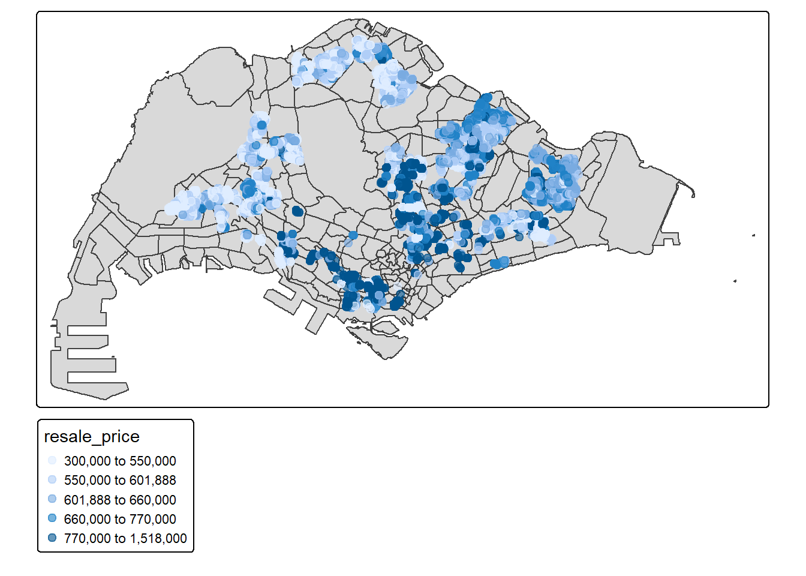
Multicollinearity Check
Before creating model, we’ll check for the multicollinearity of each independent variables. If variables have high correlation with each other, we need to drop one fo the variable as the model may be unreliable and vague. First, let’s drop the geometry field as the corrplot will pick up the geometry field if it’s not dropped.
HDB_numeric <- st_drop_geometry(HDBresale_sf)
colnames(HDB_numeric) [1] "month" "town" "flat_type"
[4] "block" "street_name" "storey_range"
[7] "floor_area_sqm" "flat_model" "lease_commence_date"
[10] "remaining_lease" "resale_price" "cbd_distance"
[13] "nearest_hawker" "nearest_eldercare" "nearest_supermarket"
[16] "kindergarten_350m" "preschool_350m" "bus_350m"
[19] "nearest_mrt" The independent variables planned to be used in the model are the following:
storey_range
floor_area_sqm
remaining_lease
cbd_distance
nearest_hawker
nearest_eldercare
nearest_supermarket
kindergarten_350m
preschool_350m
bus_350m
nearest_mrt
corrplot(cor(HDB_numeric[,c(10:19)]),
diag = FALSE,
order = "AOE",
tl.pos = "td",
tl.cex = 0.5,
method = "number",
type = "upper")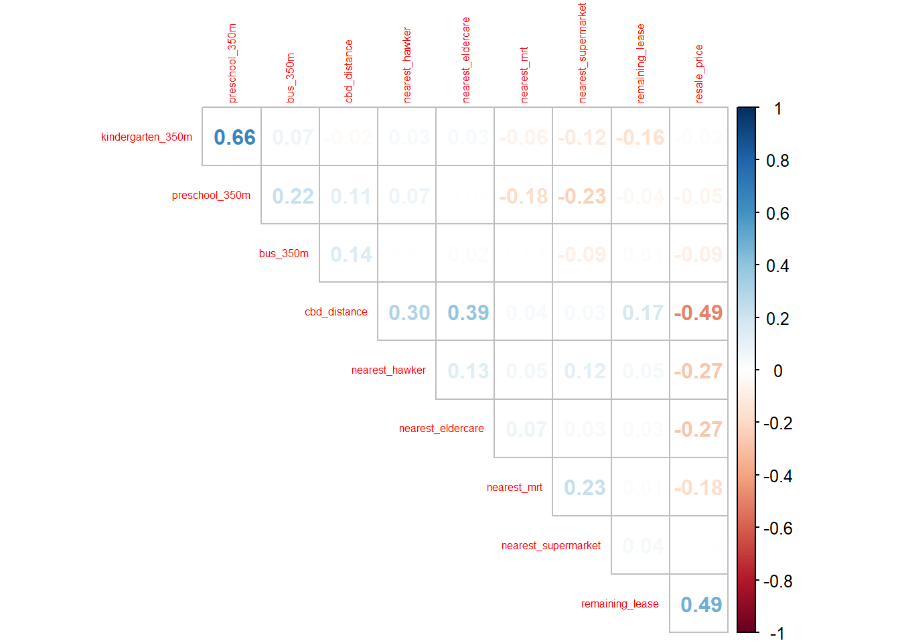
As can be seen, all of the variables don’t have high correlation with each other (< 0.8 correlation). So we can use all of the variables as predictors.
Build Multiple Linear Regression Model
We’ll build the multiple regression model with lm() and use summary() to view the summary of the model.
resale_price.mlr <- lm(
formula = resale_price ~ floor_area_sqm + remaining_lease + cbd_distance +
nearest_hawker + nearest_eldercare +
kindergarten_350m +
bus_350m + nearest_mrt,
data=HDBresale_sf)
summary(resale_price.mlr)
Call:
lm(formula = resale_price ~ floor_area_sqm + remaining_lease +
cbd_distance + nearest_hawker + nearest_eldercare + kindergarten_350m +
bus_350m + nearest_mrt, data = HDBresale_sf)
Residuals:
Min 1Q Median 3Q Max
-267996 -67318 -1575 58928 609852
Coefficients:
Estimate Std. Error t value Pr(>|t|)
(Intercept) -6.873e+04 1.703e+04 -4.035 5.50e-05 ***
floor_area_sqm 4.345e+03 1.571e+02 27.660 < 2e-16 ***
remaining_lease 7.281e+03 7.539e+01 96.577 < 2e-16 ***
cbd_distance -2.925e+01 3.922e-01 -74.587 < 2e-16 ***
nearest_hawker -4.810e+01 2.115e+00 -22.738 < 2e-16 ***
nearest_eldercare -1.463e+01 1.732e+00 -8.446 < 2e-16 ***
kindergarten_350m 7.330e+03 9.652e+02 7.594 3.43e-14 ***
bus_350m -1.412e+03 3.593e+02 -3.929 8.58e-05 ***
nearest_mrt -6.531e+01 2.549e+00 -25.621 < 2e-16 ***
---
Signif. codes: 0 '***' 0.001 '**' 0.01 '*' 0.05 '.' 0.1 ' ' 1
Residual standard error: 93660 on 8670 degrees of freedom
Multiple R-squared: 0.6603, Adjusted R-squared: 0.66
F-statistic: 2106 on 8 and 8670 DF, p-value: < 2.2e-16From the summary statistics, the model can explain 66% of the HDB resale price and the model is significantly significant as p-value is less than 0.05. The variable used in the model are all significant as the p-value of each predictor are less than 0.05. Apart from that, we can see the model deviate from actual resale price, but that there’s no bias in prediction (underprediction and overprediction)
Satisfying Requirements for Multiple Linear Regression
Next, we’ll check if the model satisfies the regression assumption, which are:
Multicollinearity test: independent variables are not independent of each other, which makes it difficult to understand which variable influence the model.
Non-linearity: independent and dependent variable need to have linear relation with each other
Normality assumption: check if the model’s residuals (difference between observed and predicted value) are normally distributed
Spatial Autocorrelation: since we’re building on a geographical referenced data, we need to check for spatial autocorrelation since regression models assume that observations (reisduals) are independent of each other.
Multicollinearity Test
We’ll test for multicollinearity with check_collinearity and we’ll plot the vif for easier understanding.
check_collinearity(resale_price.mlr)# Check for Multicollinearity
Low Correlation
Term VIF VIF 95% CI adj. VIF Tolerance Tolerance 95% CI
floor_area_sqm 1.11 [1.09, 1.14] 1.05 0.90 [0.88, 0.92]
remaining_lease 1.12 [1.10, 1.15] 1.06 0.89 [0.87, 0.91]
cbd_distance 1.37 [1.33, 1.40] 1.17 0.73 [0.71, 0.75]
nearest_hawker 1.13 [1.10, 1.16] 1.06 0.89 [0.86, 0.91]
nearest_eldercare 1.19 [1.17, 1.22] 1.09 0.84 [0.82, 0.86]
kindergarten_350m 1.05 [1.03, 1.08] 1.02 0.95 [0.93, 0.97]
bus_350m 1.03 [1.02, 1.07] 1.02 0.97 [0.94, 0.98]
nearest_mrt 1.01 [1.00, 1.07] 1.01 0.99 [0.94, 1.00]vif_model <- check_collinearity(resale_price.mlr)
plot(vif_model)
From the VIF plot, we can see that all of the predictors have no or very mild correlation with other predictors, so they don’t affect the outcome (prediction) of the model. so we don’t need to drop any of variable.
Test for Non-linearity
We’ll also test if the independent variables have linear relationship with dependent variable. We’ll be checking for non-linearity using the same function as multicollinearity test, but this time we add check = "linearity"
check_model(resale_price.mlr,
check = "linearity")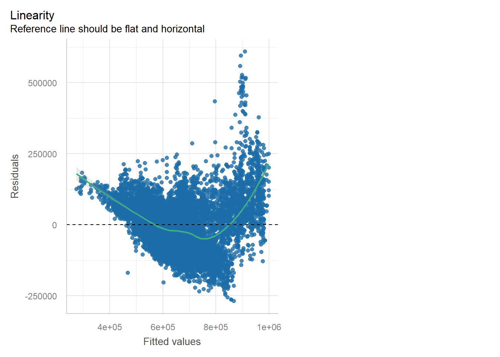
As can be seen, the residuals failed the linearity test as there’s a clear curve in the green line, which mean that the relationship between the predictors and resale price is not linear. Apart from that, the residuals spread increase at high fitted values. This means that statistical inference become unreliable (i.e. t-test become unreliable so predictor may become significant when it is not or vise versa, p-value is affected so significant variable can become significant when it is not).
We can check which variable is not linear by plotting crPlot().
cbd_crplot <- crPlot(resale_price.mlr, variable = "cbd_distance")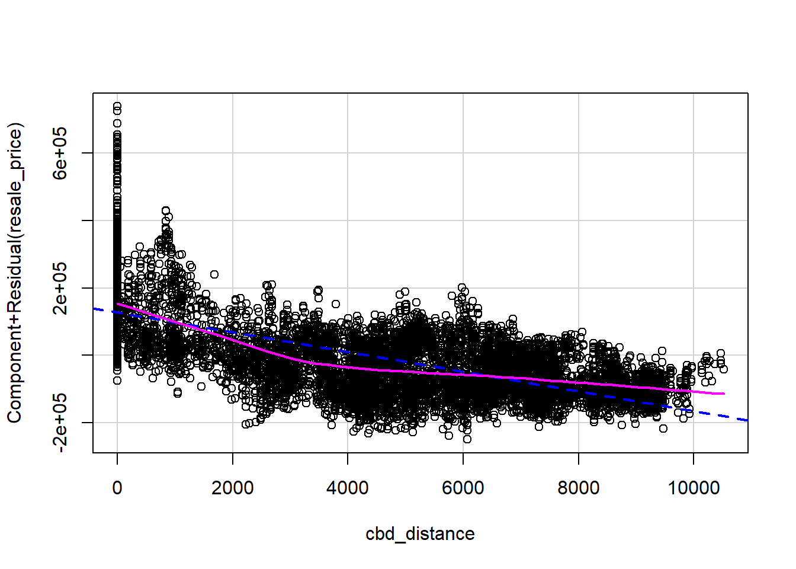
floor_area_crplot <- crPlot(resale_price.mlr, variable = "floor_area_sqm")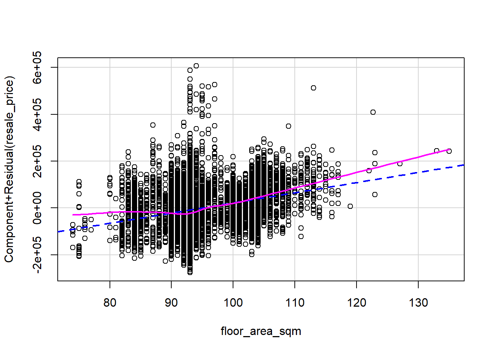
year_crplot <- crPlot(resale_price.mlr, variable = "remaining_lease")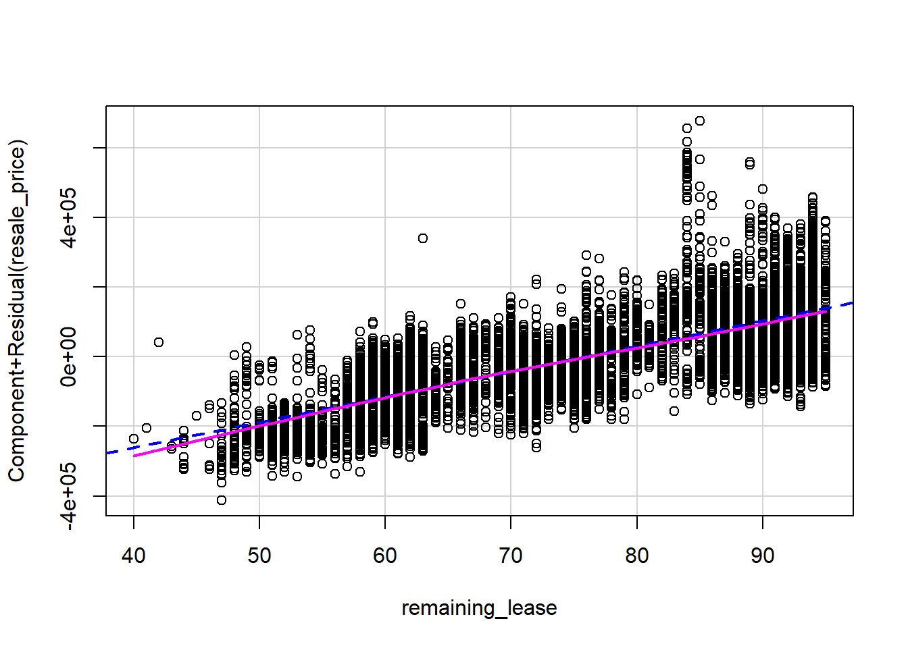
hawker_crplot <- crPlot(resale_price.mlr, variable = "nearest_hawker")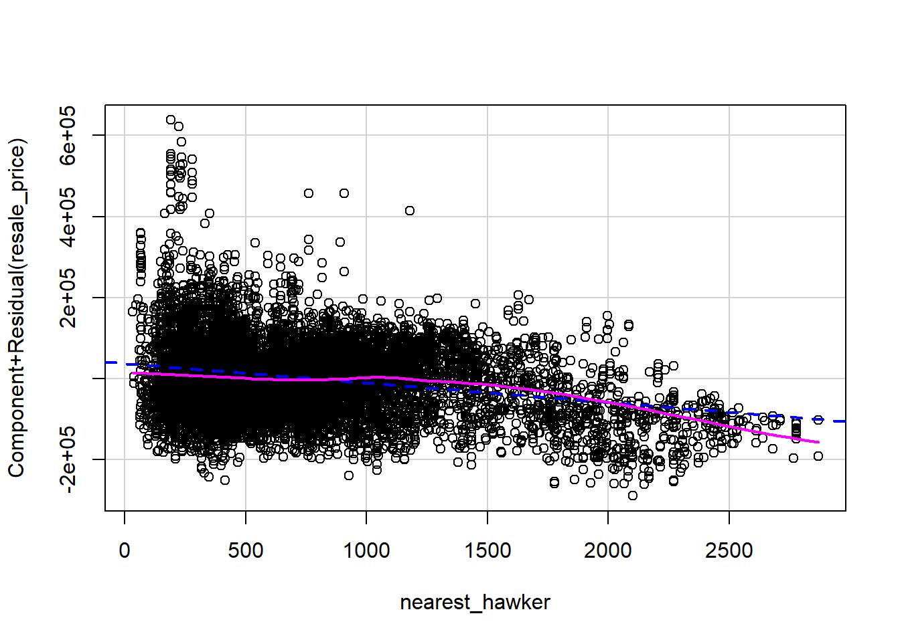
kindergarten_crplot <- crPlot(resale_price.mlr, variable = "kindergarten_350m")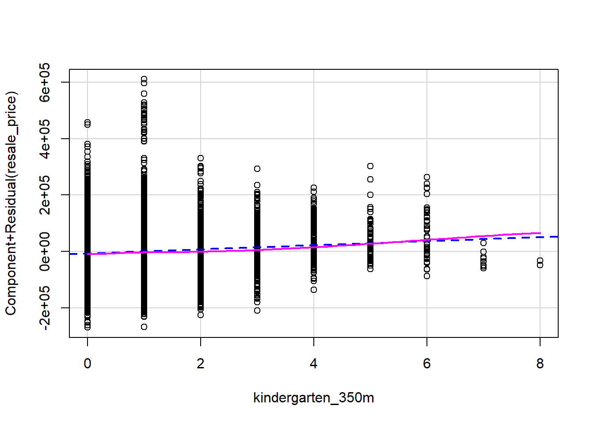
eldercare_crplot <- crPlot(resale_price.mlr, variable = "nearest_eldercare")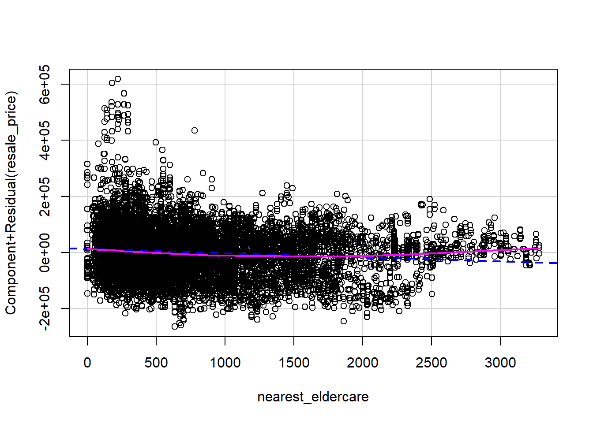
bus_crplot <- crPlot(resale_price.mlr, variable = "bus_350m")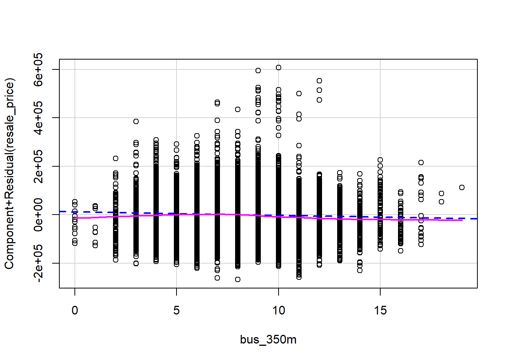
mrt_crplot <- crPlot(resale_price.mlr, variable = "nearest_mrt")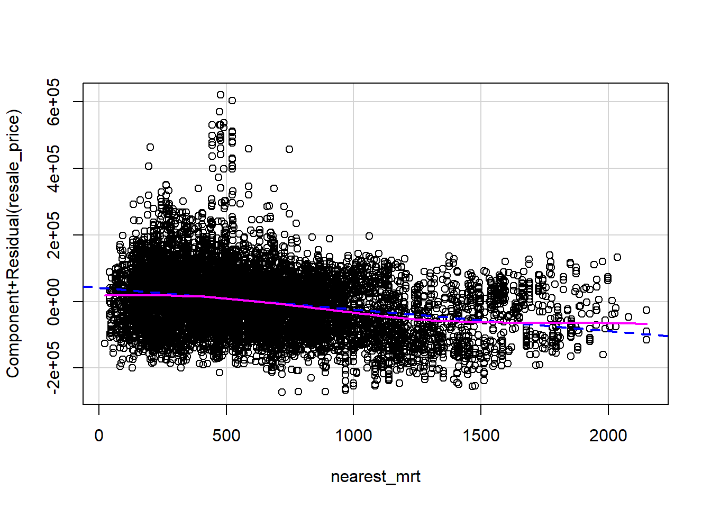
ggarrange(cbd_crplot, year_crplot, floor_area_crplot, hawker_crplot, kindergarten_crplot, eldercare_crplot, bus_crplot, mrt_crplot, ncol = 4, nrow = 2)
cbd_distance, nearest_hawker and nearest_mrt predictor show a downward trend from the linear component (purple line) and LOESS (blue dotted line). Only nearest_mrt show a consistent overlap between the linear component and LOESS line, so this means that only nearest_mrt have linear relationship with the dependent variable while nearest_hawker and cbd_distance don’t have linear relationship with the dependent variable. One way to approach non-lineariy is that we can use log transformation to reduce skewness.
floor_area_sqm, remaining_lease and kindergarten_350m shows an upward trend, with remaining_lease and kindergarten_350m having linear relationship with the dependent variable (indicated by LOESS curve and linear component). Since the variable still show some skewness, we can use square root transformation on the variables to reduce the skewness.
Another way to ensure linearity fo model can also be done by transforming the dependent variable. In this case, we’ll use log transformation as the EDA on the resale_price showed us a right tail distribution.
Next, we’ll calibrate the model with their transformation.
resale_price.mlr <- lm(
formula = log(resale_price) ~ sqrt(floor_area_sqm) + sqrt(remaining_lease) + log(cbd_distance + 1) +
log(nearest_hawker) + nearest_eldercare +
sqrt(kindergarten_350m) +
bus_350m + log(nearest_mrt),
data=HDBresale_sf)
summary(resale_price.mlr)
Call:
lm(formula = log(resale_price) ~ sqrt(floor_area_sqm) + sqrt(remaining_lease) +
log(cbd_distance + 1) + log(nearest_hawker) + nearest_eldercare +
sqrt(kindergarten_350m) + bus_350m + log(nearest_mrt), data = HDBresale_sf)
Residuals:
Min 1Q Median 3Q Max
-0.48810 -0.07831 -0.01313 0.07248 0.46257
Coefficients:
Estimate Std. Error t value Pr(>|t|)
(Intercept) 1.154e+01 4.220e-02 273.452 <2e-16 ***
sqrt(floor_area_sqm) 1.225e-01 3.732e-03 32.820 <2e-16 ***
sqrt(remaining_lease) 1.583e-01 1.549e-03 102.213 <2e-16 ***
log(cbd_distance + 1) -3.877e-02 4.408e-04 -87.949 <2e-16 ***
log(nearest_hawker) -3.037e-02 1.944e-03 -15.620 <2e-16 ***
nearest_eldercare -2.322e-05 2.073e-06 -11.199 <2e-16 ***
sqrt(kindergarten_350m) -6.449e-04 1.968e-03 -0.328 0.7431
bus_350m 7.414e-04 4.439e-04 1.670 0.0949 .
log(nearest_mrt) -3.727e-02 1.802e-03 -20.683 <2e-16 ***
---
Signif. codes: 0 '***' 0.001 '**' 0.01 '*' 0.05 '.' 0.1 ' ' 1
Residual standard error: 0.1143 on 8670 degrees of freedom
Multiple R-squared: 0.7169, Adjusted R-squared: 0.7166
F-statistic: 2745 on 8 and 8670 DF, p-value: < 2.2e-16After the transformation, kindergarten_350m becomes insignificant predictor to predict resale_price,so we’ll drop the variable. We can also observe that the prediction accuracy increased by 4% and the model is significant as the p-value is less than 0.05. We can also see Apart from that, we can see the model deviate from actual resale price, but that there’s no bias in prediction (underprediction and overprediction).
revised_mlr <- lm(
formula = log(resale_price) ~ sqrt(floor_area_sqm) + sqrt(remaining_lease) + log(cbd_distance + 1) +
log(nearest_hawker) + nearest_eldercare +
bus_350m + log(nearest_mrt),
data=HDBresale_sf)
summary(resale_price.mlr)
Call:
lm(formula = log(resale_price) ~ sqrt(floor_area_sqm) + sqrt(remaining_lease) +
log(cbd_distance + 1) + log(nearest_hawker) + nearest_eldercare +
sqrt(kindergarten_350m) + bus_350m + log(nearest_mrt), data = HDBresale_sf)
Residuals:
Min 1Q Median 3Q Max
-0.48810 -0.07831 -0.01313 0.07248 0.46257
Coefficients:
Estimate Std. Error t value Pr(>|t|)
(Intercept) 1.154e+01 4.220e-02 273.452 <2e-16 ***
sqrt(floor_area_sqm) 1.225e-01 3.732e-03 32.820 <2e-16 ***
sqrt(remaining_lease) 1.583e-01 1.549e-03 102.213 <2e-16 ***
log(cbd_distance + 1) -3.877e-02 4.408e-04 -87.949 <2e-16 ***
log(nearest_hawker) -3.037e-02 1.944e-03 -15.620 <2e-16 ***
nearest_eldercare -2.322e-05 2.073e-06 -11.199 <2e-16 ***
sqrt(kindergarten_350m) -6.449e-04 1.968e-03 -0.328 0.7431
bus_350m 7.414e-04 4.439e-04 1.670 0.0949 .
log(nearest_mrt) -3.727e-02 1.802e-03 -20.683 <2e-16 ***
---
Signif. codes: 0 '***' 0.001 '**' 0.01 '*' 0.05 '.' 0.1 ' ' 1
Residual standard error: 0.1143 on 8670 degrees of freedom
Multiple R-squared: 0.7169, Adjusted R-squared: 0.7166
F-statistic: 2745 on 8 and 8670 DF, p-value: < 2.2e-16Next, we’ll check again if the model satisfy the linearity assumption.
check_model(resale_price.mlr,
check = "linearity")
The plot indicate that there’s still a bit of non-linearity even after the variable are transformed as the green line is still not a straight line and does not follow the dotted line. However, this time, there is no sign of heteroskedacity as the residuals values do not have any pattern unlike before.
Test for Normality Assumption
In this section, we’ll test for the normality assumption of the residuals for reliably compute confidence interval, p-value and statistical significance tests. We’ll check by plotting its qqplot using check_normality(), but we’ll add this argument type = "qq".
plot(check_normality(resale_price.mlr),
type = "qq")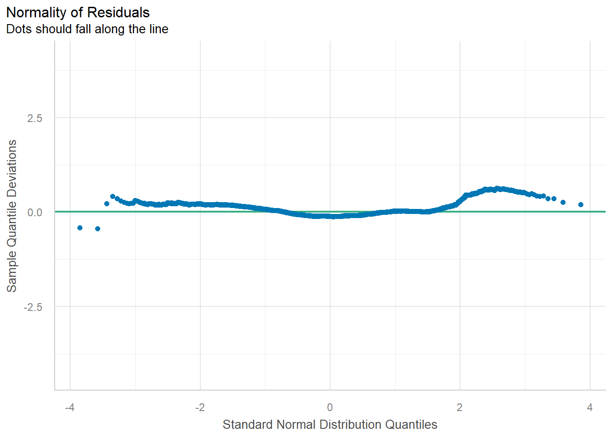
check_model(resale_price.mlr,
check= "normality")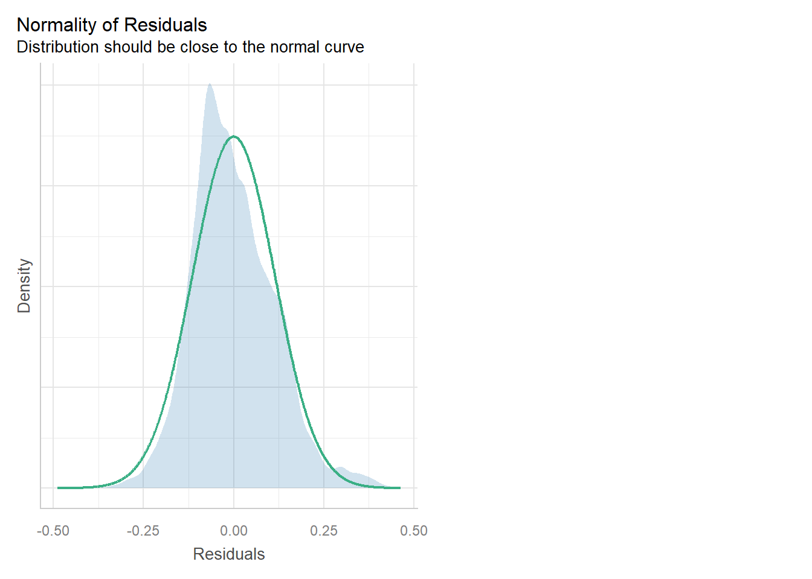
From the qqplot and normality check, we can conclude that the model satisfies the normality assumption as the residuals follow the straight line in qqplot and from the second plot we can see the residual follow approximately normal distribution.
Spatial Autocorrelation
Before we check for spatial autocorrelation, we’ll derive a new column in HDBresale_sf to calculate the residuals. We’ll be using the residuals() function.
residual_hdb <- residuals(resale_price.mlr)
HDBresale_sf <- cbind(HDBresale_sf, residual_hdb) %>%
rename(model_residual = `residual_hdb`)library(RColorBrewer)
tm_shape(map) +
tm_polygons(fill_alpha = 0.4) +
tm_shape(HDBresale_sf) +
tm_dots(
fill = "model_residual",
size = 0.7,
col = "black",
fill.scale = tm_scale(
n = 10,
values = rev(brewer.pal(11, "RdBu")),
style = "quantile",
midpoint = NA),
fill.legend = tm_legend(title = "Residuals")
) +
tm_title("LM Residuals (Quantile Classification)") +
tm_layout(legend.outside = TRUE) +
tm_view(set_zoom_limits = c(11,14))
It seems that there are spatial autocorrelation from the plot above (indicated by blue and red points on the map). We’ll confirm by computing Moran’s I.
HDBresale_sf <- HDBresale_sf %>%
mutate(
nb = st_dist_band(
st_geometry(geometry),
upper = 1500),
wt = st_weights(
nb, style = "W"),
.before = 1) set.seed(1234)
global_moran_perm(
HDBresale_sf$model_residual,
nb = HDBresale_sf$nb,
wt = HDBresale_sf$wt,
alternative = "two.sided",
nsim = 499)
Monte-Carlo simulation of Moran I
data: x
weights: listw
number of simulations + 1: 500
statistic = 0.46044, observed rank = 500, p-value < 2.2e-16
alternative hypothesis: two.sidedAs can be seen, the statistic is 0.46, which indicate a high spatial correlation and the the the findings are significant as p-value is less than 0.05.
Build HDB Resale Price Model with GWmodel
bw.adaptive <- bw.gwr(
formula = log(resale_price) ~ sqrt(floor_area_sqm) + sqrt(remaining_lease) + log(cbd_distance + 1) +
log(nearest_hawker) + nearest_eldercare +
bus_350m + log(nearest_mrt),
data=HDBresale_sf,
approach="CV",
kernel="gaussian",
adaptive=TRUE,
longlat=FALSE)Take a cup of tea and have a break, it will take a few minutes.
-----A kind suggestion from GWmodel development group
Adaptive bandwidth: 5371 CV score: 99.75203
Adaptive bandwidth: 3327 CV score: 90.01183
Adaptive bandwidth: 2063 CV score: 83.13185
Adaptive bandwidth: 1282 CV score: 74.91956
Adaptive bandwidth: 799 CV score: 64.7395
Adaptive bandwidth: 501 CV score: 57.73536
Adaptive bandwidth: 316 CV score: 49.77402
Adaptive bandwidth: 202 CV score: 40.92748
Adaptive bandwidth: 131 CV score: 35.42502
Adaptive bandwidth: 88 CV score: 32.17934
Adaptive bandwidth: 60 CV score: 29.89346
Adaptive bandwidth: 44 CV score: Inf
Adaptive bandwidth: 71 CV score: 30.99306
Adaptive bandwidth: 54 CV score: 29.20598
Adaptive bandwidth: 49 CV score: 28.88657
Adaptive bandwidth: 47 CV score: 28.70534
Adaptive bandwidth: 45 CV score: 28.55112
Adaptive bandwidth: 44 CV score: Inf
Adaptive bandwidth: 45 CV score: 28.55112 gwr.adaptive <- gwr.basic(
formula = log(resale_price) ~ sqrt(floor_area_sqm) + sqrt(remaining_lease) + log(cbd_distance + 1) +
log(nearest_hawker) + nearest_eldercare +
bus_350m + log(nearest_mrt),
data=HDBresale_sf,
bw=bw.adaptive,
kernel = 'gaussian',
adaptive=TRUE,
longlat = FALSE)
gwr.adaptive ***********************************************************************
* Package GWmodel *
***********************************************************************
Program starts at: 2025-11-17 06:52:33.762359
Call:
gwr.basic(formula = log(resale_price) ~ sqrt(floor_area_sqm) +
sqrt(remaining_lease) + log(cbd_distance + 1) + log(nearest_hawker) +
nearest_eldercare + bus_350m + log(nearest_mrt), data = HDBresale_sf,
bw = bw.adaptive, kernel = "gaussian", adaptive = TRUE, longlat = FALSE)
Dependent (y) variable: resale_price
Independent variables: floor_area_sqm remaining_lease cbd_distance nearest_hawker nearest_eldercare bus_350m nearest_mrt
Number of data points: 8679
***********************************************************************
* Results of Global Regression *
***********************************************************************
Call:
lm(formula = formula, data = data)
Residuals:
Min 1Q Median 3Q Max
-0.48772 -0.07823 -0.01313 0.07252 0.46245
Coefficients:
Estimate Std. Error t value Pr(>|t|)
(Intercept) 1.154e+01 4.219e-02 273.495 <2e-16 ***
sqrt(floor_area_sqm) 1.224e-01 3.719e-03 32.904 <2e-16 ***
sqrt(remaining_lease) 1.584e-01 1.531e-03 103.471 <2e-16 ***
log(cbd_distance + 1) -3.876e-02 4.392e-04 -88.249 <2e-16 ***
log(nearest_hawker) -3.038e-02 1.943e-03 -15.632 <2e-16 ***
nearest_eldercare -2.325e-05 2.071e-06 -11.230 <2e-16 ***
bus_350m 7.317e-04 4.429e-04 1.652 0.0986 .
log(nearest_mrt) -3.725e-02 1.800e-03 -20.690 <2e-16 ***
---Significance stars
Signif. codes: 0 '***' 0.001 '**' 0.01 '*' 0.05 '.' 0.1 ' ' 1
Residual standard error: 0.1143 on 8671 degrees of freedom
Multiple R-squared: 0.7169
Adjusted R-squared: 0.7167
F-statistic: 3137 on 7 and 8671 DF, p-value: < 2.2e-16
***Extra Diagnostic information
Residual sum of squares: 113.2761
Sigma(hat): 0.1142574
AIC: -13008.8
AICc: -13008.78
BIC: -21542.56
***********************************************************************
* Results of Geographically Weighted Regression *
***********************************************************************
*********************Model calibration information*********************
Kernel function: gaussian
Adaptive bandwidth: 45 (number of nearest neighbours)
Regression points: the same locations as observations are used.
Distance metric: Euclidean distance metric is used.
****************Summary of GWR coefficient estimates:******************
Min. 1st Qu. Median 3rd Qu.
Intercept -2.6747e+02 1.0672e+01 1.1829e+01 1.4089e+01
sqrt(floor_area_sqm) -9.3195e-01 8.2318e-02 1.1247e-01 1.4364e-01
sqrt(remaining_lease) -4.6624e-01 1.2396e-01 1.6049e-01 2.0983e-01
log(cbd_distance + 1) -6.0818e+272 -3.0472e-01 -3.1057e-02 2.9525e-02
log(nearest_hawker) -1.5266e+00 -5.3238e-02 -1.4329e-02 1.6850e-02
nearest_eldercare -2.0765e-03 -5.8063e-05 -2.3259e-06 6.0310e-05
bus_350m -1.8657e-02 -3.2894e-03 1.2019e-04 3.6477e-03
log(nearest_mrt) -1.6069e+00 -1.0022e-01 -5.6660e-02 -2.1145e-02
Max.
Intercept 2.4903e+02
sqrt(floor_area_sqm) 1.1227e+00
sqrt(remaining_lease) 4.4220e-01
log(cbd_distance + 1) 2.7131e+235
log(nearest_hawker) 1.7389e+00
nearest_eldercare 2.7000e-03
bus_350m 3.7100e-02
log(nearest_mrt) 1.6271e+00
************************Diagnostic information*************************
Number of data points: 8679
Effective number of parameters (2trace(S) - trace(S'S)): 726.7996
Effective degrees of freedom (n-2trace(S) + trace(S'S)): 7952.2
AICc (GWR book, Fotheringham, et al. 2002, p. 61, eq 2.33): -25036.53
AIC (GWR book, Fotheringham, et al. 2002,GWR p. 96, eq. 4.22): -25691.44
BIC (GWR book, Fotheringham, et al. 2002,GWR p. 61, eq. 2.34): -29756.71
Residual sum of squares: 24.64851
R-square value: 0.9384
Adjusted R-square value: 0.9327693
***********************************************************************
Program stops at: 2025-11-17 06:53:06.316927 As can be seen, the R2 score is at 93%, which means that the model can explain 93% of the HDB resale price, the model is also significant. However, the model may not be as significant as the spatial autocrrelation is moderate, it can be seen from the coefficient summary of the cbd_distance is very big. So the model might not be as relavant. The variable that contribute the most to the model are floor_area_sqm and remaining_lease as they have highest estimate value and p-value lower than 0.05.
HDBresale.adaptive <-
st_as_sf(gwr.adaptive$SDF) %>%
st_transform(crs=3414)tm_shape(map)+
tm_polygons(fill_alpha = 0.1) +
tm_shape(HDBresale.adaptive) +
tm_dots(col = "Local_R2",
border.col = "gray60",
border.lwd = 1) 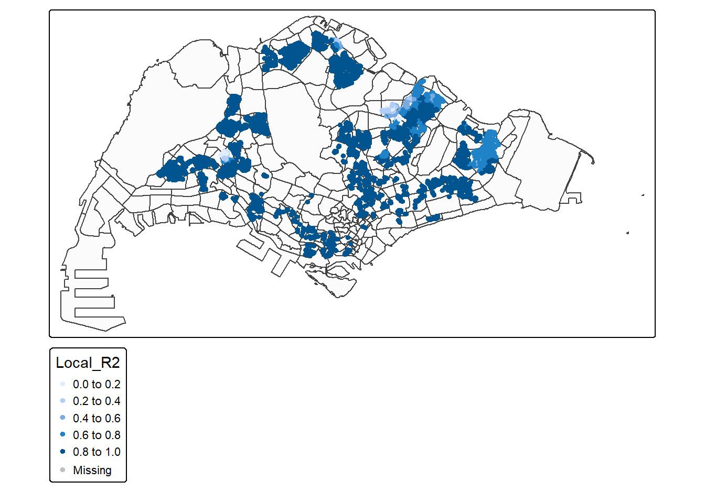
The model explains well the HDB preoperty’s resale price overall, but they don’t explain some resale price of HDB property in the north and west.
Since the model isn’t relevant, we can use other models such as SEM (Spatial Error Model), SDM (Spatial Durbin Model) and SAR (Spatial Autoregressive Model). However, since SEM is best model for explanatory model and it remove spatial autocorrelation in residuals (making coffeicient and p-value reliable), we’ll caliberate this model.
First, we’ll start by create coordinates and create neighbour’s list, then we’ll convert the list to spatial weights and calibrate the model
coords <- st_coordinates(st_centroid(HDBresale_sf))nb <- dnearneigh(coords, d1 = 0, d2 = 1500)wt <- nb2listw(nb, style = "W")revised_model <- errorsarlm(
formula = log(resale_price) ~ sqrt(floor_area_sqm) + sqrt(remaining_lease) + log(cbd_distance + 1) +
log(nearest_hawker) + nearest_eldercare +
bus_350m + log(nearest_mrt),
data = HDBresale_sf,
listw = wt,
method = "eigen"
)
summary(revised_model)
Call:errorsarlm(formula = log(resale_price) ~ sqrt(floor_area_sqm) +
sqrt(remaining_lease) + log(cbd_distance + 1) + log(nearest_hawker) +
nearest_eldercare + bus_350m + log(nearest_mrt), data = HDBresale_sf,
listw = wt, method = "eigen")
Residuals:
Min 1Q Median 3Q Max
-0.57233724 -0.04871563 -0.00069994 0.04813583 0.36598626
Type: error
Coefficients: (asymptotic standard errors)
Estimate Std. Error z value Pr(>|z|)
(Intercept) 1.1104e+01 6.7884e-02 163.5757 < 2.2e-16
sqrt(floor_area_sqm) 1.3363e-01 2.7474e-03 48.6401 < 2.2e-16
sqrt(remaining_lease) 1.8759e-01 1.2654e-03 148.2428 < 2.2e-16
log(cbd_distance + 1) -1.6088e-02 2.0454e-03 -7.8651 3.775e-15
log(nearest_hawker) -1.2272e-02 1.7543e-03 -6.9953 2.647e-12
nearest_eldercare -1.4803e-05 2.7517e-06 -5.3795 7.467e-08
bus_350m 2.2434e-03 3.2979e-04 6.8025 1.028e-11
log(nearest_mrt) -6.8555e-02 1.7608e-03 -38.9339 < 2.2e-16
Lambda: 0.98524, LR test value: 6511.7, p-value: < 2.22e-16
Asymptotic standard error: 0.0031903
z-value: 308.83, p-value: < 2.22e-16
Wald statistic: 95374, p-value: < 2.22e-16
Log likelihood: 9769.245 for error model
ML residual variance (sigma squared): 0.0060661, (sigma: 0.077885)
Number of observations: 8679
Number of parameters estimated: 10
AIC: -19518, (AIC for lm: -13009)From the model, the log-likelihood seem to have better fit as the value is high (9769.245), as the AIc is also lower (-13,009), iy is better compared to the multiple linear regression model. The variable that contribute to predicting resale_price are floor_area_sqm and remaining_lease as the cofficient is high.
Next, we’ll test again for spatial autocorrelation.
residual_revised <- residuals(revised_model)
moran.test(residual_revised, wt)
Moran I test under randomisation
data: residual_revised
weights: wt
Moran I statistic standard deviate = 9.4646, p-value < 2.2e-16
alternative hypothesis: greater
sample estimates:
Moran I statistic Expectation Variance
9.381373e-03 -1.152339e-04 1.006771e-06 As can be seen, the Morans I value is close to 0, so there is no longer spatial autocorrelation in the model unlike the multiple linear regression model.